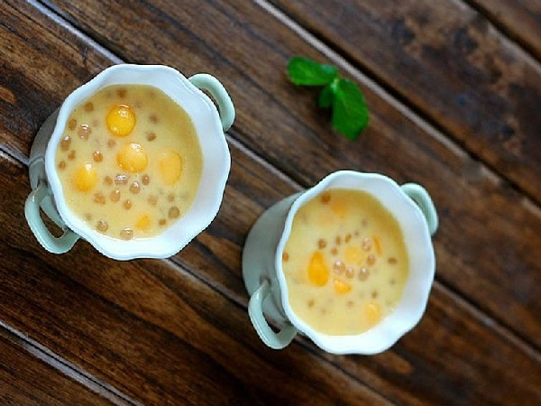

Theo nghiên cứu của các nhà khoa học thì uống mỗi ngày một cốc sinh tố xoài chứa tỷ lệ phần trăm dinh dưỡng như sau: 103 kalo, 75% vitamin C có tác dụng chống ôxy hóa và tăng cường hệ miễn dịch; 24% vitamin A giúp chống oxy hóa và tăng thị lực; 12% vitamin B6 và một số vitamin B khác các tác dụng phòng bệnh não và tim mạch; 10% lợi khuẩn; 8% đồng cần cho việc sản xuất các tế bào máu; 8% kali giúp cân bằng lượng natri trong cơ thể và 5% magie.
500g xoài chín
1 quả cam máu (hoặc thay thế bằng cam đường nếu không có)
400ml nước cốt dừa
1 muỗng canh đường
150g trân châu khô (loại hạt nhỏ)
Bước 1: Rửa qua trân châu khô rồi đổ vào nồi, thêm lượng nước vừa phải, sau đó đặt lên bếp, đun lửa vừa. Khi nước sôi thì hạ nhỏ lửa, đun tiếp khoảng 15 phút hoặc đến khi trong suốt, lưu ý là trong thời gian này phải khuấy liên tục để tránh bị bén nồi. Vớt trân châu ra, đổ vào bát nước mát.
Bước 2: Cam bổ đôi, lộn ngược từng miếng rồi tách thành những miếng nhỏ. Xoài gọt vỏ, cắt miếng vuông chừng 1cm, đồng thời vớt trân châu ra bát.
Bước 3: Cho xoài vào máy xay, thêm nước cốt dừa và đường (có thể thêm ít sữa tươi), xay cho đến khi được hỗn hợp nhuyễn mịn. Sau đó cho trân châu vào trộn đều. Rắc cam xé miếng nhỏ vào, đặt thức uống vào tủ lạnh khoảng 30 phút, lấy ra, rắc xoài cắt nhỏ để trang trí lên trên mặt.
Sự pha trộn tinh tế giữa vị chua thanh của cam và cái ngọt sắc của xoài thêm vị giai giai giòn giòn của trân châu trong món sinh tố Cam Xoài khiến cho nó vừa ngọt thơm, dễ uống lại đem tới cảm giác sảng khoái. Với chút ít thời gian, cách làm lại đơn giản là bạn đã có ngay một thức uống giải khoát, ngon miệng lại tốt cho sức khỏe. Bạn hãy làm món sinh tố ngon này đãi gia đình thân yêu trong những ngày nắng nóng như thế này nhé.